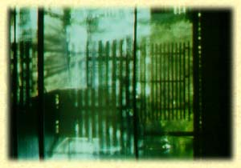

Etymological roots are indicated by the sign ç.
Language groups are as follows: SKT: Sanscrt; E: Egyptian; HB: Hebrew; GK:
Greek; L: Latin; AS: Anglo Saxon; ME: Middle English; OHG: Old High
German; G: German; OFR: Old French; FR: French; IT: Italian; ICL:
Icelandic; N: Nordic; SW: Swedish.

çQERT = to bind together; SKT: krt = to spin, kartas = a mat; chrt = to fasten together; GK: kartalos = a woven basket. çKER = to project, stand up; SKT: srngam = horn, siras = head; L: cornu = horn (corner, cornet, horn, corn, grain, kernel, cereal, crescent, increase, accrete, accrue, crew); GK: kara = head, keras = horn, keraia = horn-like. (çGER), horn, hornet). çGHER = seize, grasp, hold, contain, gird; AS: gyrd, gerd = (measuring) stick, rod, cross beam on a mast for spreading sails; GK: cheir = hand, choros = round/ring dance, chortos = enclosure/courtyard; L: hortus = yard, garden - allied to chor-de = chord, string of gut (yarn); çGHER = desire, yearn; GK: chairein = rejoice, chara = joy, charis = grace; çGwHER = to glow; SKT: ghr = to shine. çQER = to make; GK: kreon = ruler; L:cerus = creator; crescere = to grow; SKT çKR = to make; karman = deed. çQAR = to sing/cry aloud/love; SKT: karu = singer; GK: karkairein = to resound, kerux = a herald; L: carmen = song, carus = dear (charm); çKERD = heart; L: cor/cordis, cardia; AS: heorte = heart (cardiac, cordial, accord, concord); GK: kardia/kar = heart. SKT: karman = action, deed, ritual; L: caerimonia = ceremony. çQREU = to wound; SKT: kravi = raw flesh, to wound; GK: kreas = raw flesh; L: crudus = raw, cruor = blood (cruel, crude). çGHA/çKHA = to gape, yawn; GK: khaos, khasma = abyss (chaos); FR: jardin; AS: geard = yard; Gothic: gards = house; garda = field; GK: chortos [Teutonic: ghortos] = yard, court, enclosure (court, girdle, curtain, horticulture, orchard (cord/chord as in string/yarn/thread defining an enclosure); cf. çGAR = cause, make ready, do; and E: yare = ready, quick, prompt - allied to gear; çGEN(KEN): to generate, produce; SKT: jan = beget (begin); GK: genos = race, gineomai = I am born; L: genus, GK: genos = race, kin (genesis, generate, cosmogony, kind, gender, generic, general, generous); GK: gigeoskein, geotos; L: gnoscere = to know (gnostic, gnomon [GK: gnomon = one who knows], know). Cf. GK: gonu; L: genu = articulation, joint, knee (genuflect), corner; goneus = parent, seed; ginomai = to cause to be, to become, arise, be assembled; to be fulfilled; genius = innate (genuine) inborn nature or power of productivity; HB: GAN = a sphere of organic activity, a bounded enclosure, garden; HB: ganan = to hedge about, protect, defend (gannab = thief); genez = chest, treasury; gam = gather, assemble; gomed = to grasp, span, cubit; GN = circuit, closure, protective enclosure, limit, sphere of organic production; that which covers, shades, protects; GAN = circular, wheel like movement; the action of all that deploys around something and envelops or contains it; a light (female) vestment (gown, organ); a protective enclosure; an effortlessly opening and extending, containing and receiving envelope.